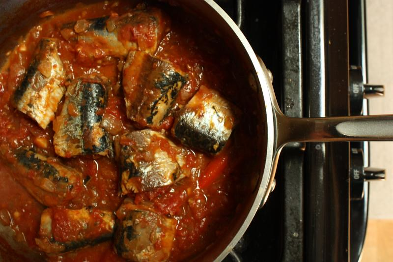

Canned Sardines in Tomato Sauce

Description
Ready in under 10 minutes, this easy recipe for Mexican canned sardines in tomato sauce is packed with flavour.
Served with fluffy white rice or tucked inside a tortilla, it’s the ultimate quick, economical and delicious meal.
Ingredients
- 1 can of sardines in tomato sauce (not drained) 125 grams
- 1 Tablespoon Extra Virgin Olive Oil
- 1 small onion chopped
- 1 clove garlic peeled and minced
- ½ small jalapeño pepper seeded and minced finely
- 1 Tablespoon tomato paste
- 1 Tablespoon water
- 1 Tablespoon freshly-squeezed lime juice
- 1 Tablespoon finely-chopped cilantro
- 1 cup cooked white rice
- 1 green onion sliced for garnish
Steps
- Heat extra virgin olive oil in a skillet over medium-high heat.
- Add onion, then garlic, jalapeño pepper and cilantro. Sauté until softened but not browned.
- Add tomato paste mixed with water and lime juice to skillet. Stir and sauté.
- Add canned sardines with tomato sauce to the onion, tomato mixture in skillet. Cover and heat until warmed through without stirring. You want to keep the sardines intact.
- Place the sardines on top of cooked white rice in a bowl.
- Garnish with sliced green onion and serve immediately with a wedge of lime and/or hot sauce.
Home